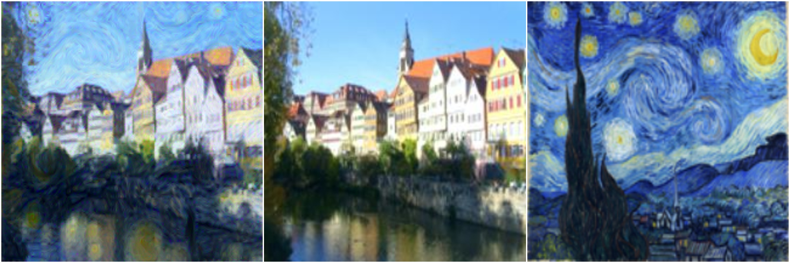

What if Van Gogh had painted your photograph? By transferring image style while preserving image content, this algorithm creates interesting artistic effects.
Style transfer walks the gap between two incompatible goals. First, reconstruct perfectly the content of one image. Second, reconstruct perfectly the style of another image. A compromise between these two yields an impressive approximation.
This is a step-by-step process. Below are animations from the original to the final result. Each GIF frame corresponds to 50 updates, so this is computationally intensive!
The middle column shows Edward Munch's The Scream, and the right is Vincent Van Gogh's Starry Night.
Certain images are better suited for style transfer than others. The river scene's sky transforms into a starry night quite easily, while the brick background of Jared's face doesn't seem right when a moon blends into the background.
The bottom image is the result from starting with a "white noise" image - random pixels of red, green, blue, and often purple. Although the end result should be the same, notice the difficulty the algorithm has. Style transfers more easily than content. This is why style transfer is best done by starting with the original image, then applying style.
So just because an algorithm can work doesn't mean it will. Explore the code below, and happy tinkering!
Full code is available here.